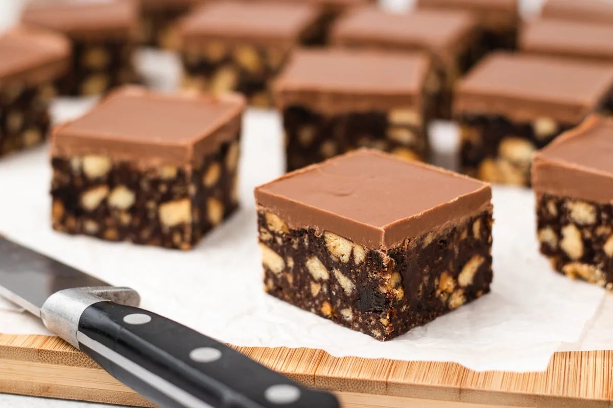

Home
Easy Scottish Tiffin Recipe


Description
If you've never tried Scottish Tiffin, you're in for a real treat.
This no-bake chocolate slice is a beloved classic in Scotland—super easy to make and absolutely delicious.
It's got that perfect mix of crunchy biscuit pieces, rich cocoa, and a smooth chocolate topping that sets beautifully in the fridge.
You can throw in extras like raisins or cherries if you're feeling fancy, but it's just as good with the basics.
Whether you're making it for a bake sale, afternoon tea, or just because you want something sweet without turning on the oven, tiffin is a winner every time.
Let's get into it!
Ingredients
- 375g (3 ¾ cups) digestive biscuits
- 200g (¾ cups + 2 tbsp) unsalted butter
- 110g (1/3 cup) golden syrup
- 40g (1/3 cup + 1 tbsp) cocoa powder
- 40g (3 tbsp) caster sugar
- 180g (1 cup + 2 tbsp) raisins
- 300g ( 1 ¾ cups) milk chocolate
Steps
- Gather all your ingredients.
- Grease and line a 20cm/8” square tin with baking paper.
- Put the digestive biscuits into a zip lock bag and bash them with a rolling pin to break them up. They should be mostly broken into fine crumbs, but you can leave a few larger chunks.
- Add the butter, golden syrup, sugar and cocoa powder to a large saucepan. Melt everything together over a low heat, stirring frequently.
- Once the mixture has melted, remove the pan from the heat and add the digestive biscuits and raisins. Stir everything together well so the biscuits are completely coated in the butter mixture.
- Transfer the mixture to your prepared tin and press it down into a compact even layer with the back of a spoon.
- Melt the chocolate in the microwave in 30-second bursts, stirring in between. Pour the melted chocolate over the top of the tiffin base, smoothing it out into an even layer.
- Put the tin in the fridge for at least 2 hours to allow everything to set.
- To prevent the chocolate layer on top from cracking when you cut into it, allow the tiffin to come to room temperature again before slicing. Slice up into 16 squares.
- Enjoy.